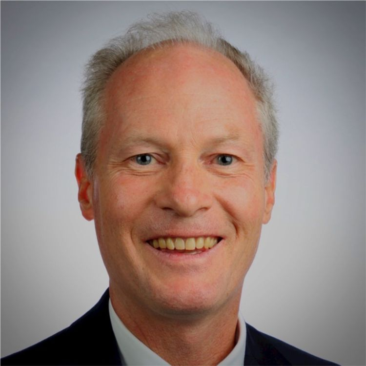

Edward Ludwig
Board Chairman
45+ years of senior executive medical industry
leadership experience including Chairman,
President and CEO of Becton, Dickinson and Company.
Numerous Board roles, including; Boston Scientific,
CVS, Aetna, AdvaMed (Chairman), Johns Hopkins Michael
Bloomberg School of Public Health, Hackensack University
Medical Center, College of Holy Cross, Columbia Business
School, The Center for Higher Ambition Leadership.
MBA Columbia University…

Edward Gillen
CEO | CCO
Edward Gillen is GRIP’s CEO and brings over 30 years
medical device industry experience, including
point-of-care diagnostics. Ed enjoyed a
successful 23-year career at Becton Dickinson
holding many positions globally including WW
Senior Director – Strategy & Business Development
– Diabetes Care Division, Global VP/GM
– Surgical and Anesthesia Systems ($200M P&L),
Advanced Drug Delivery, Global Business Leader
– Vaccine Delivery. Ed’s startup experience includes
his most recent role as CEO Medality Medical.
Ed has his MBA from Penn State University.
Bruce Batten Ph.D.
Founder | CSO
Bruce Batten has over 30 years of General
Management experience at Companies like BioRad,
Thermo Instruments, CyberOptics and Advantek.
In addition, he has participated in four
technology startups at the C-level and was
Founder/Co-Founder at two of the startups
before founding GRIP. Bruce started his career
in Academia earning a Ph.D. in Anatomy & Cell
Biology at the Medical College of Virginia
and did his post-doctoral work at
Harvard Medical School. He was Faculty
member at Harvard, Tufts and The Ohio
State medical schools and later ran
the MBA Program at Augsburg University.